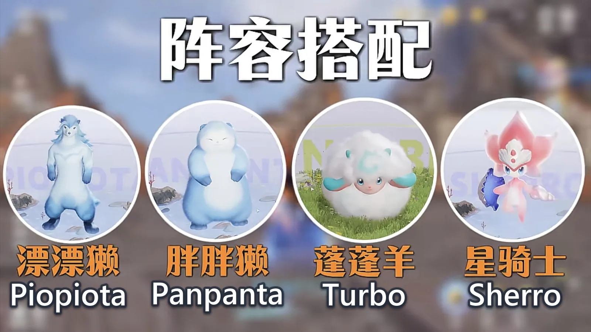
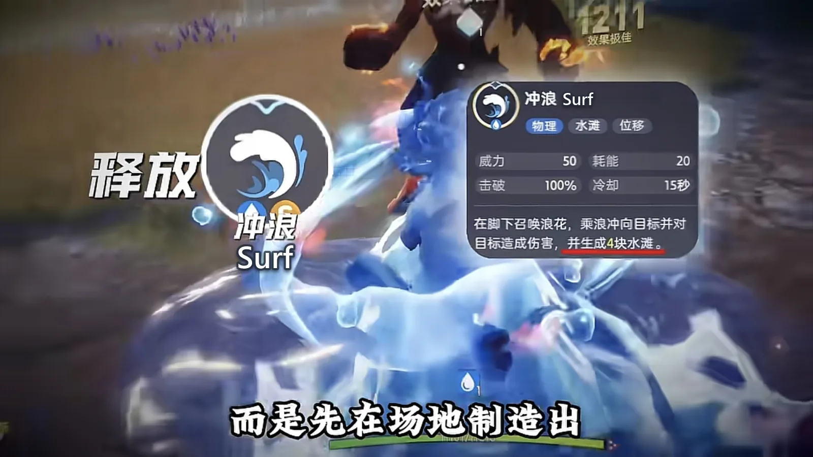
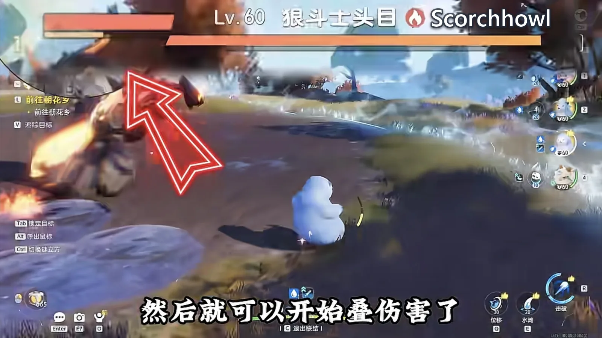
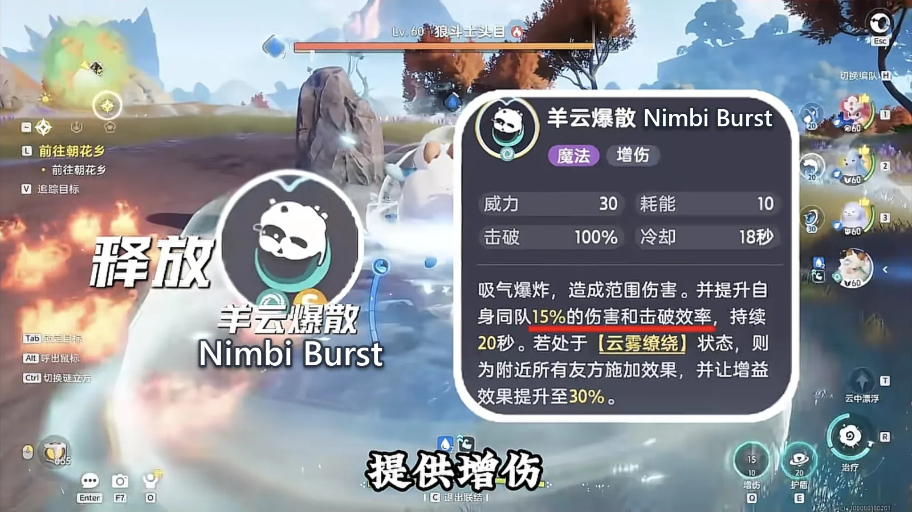
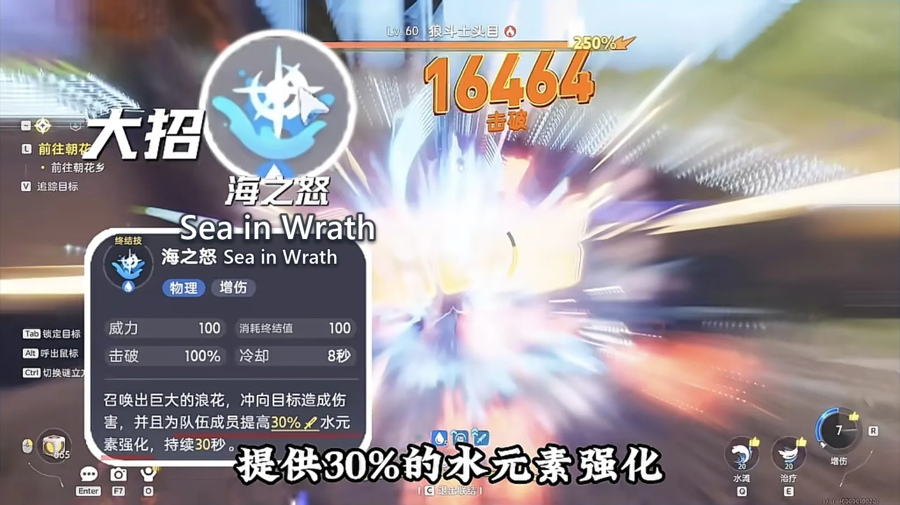
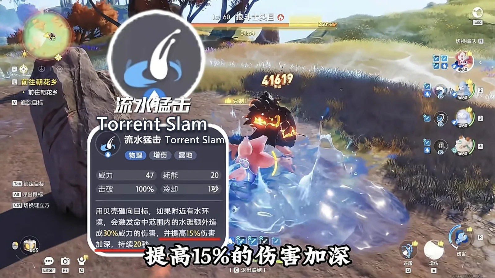
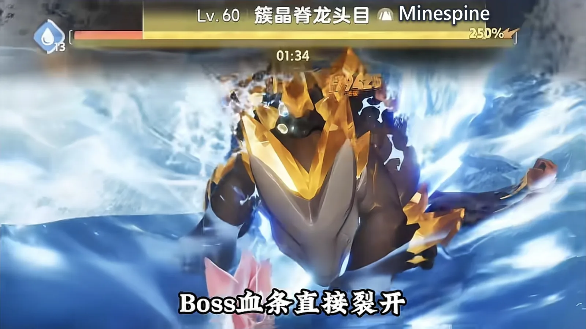

Home首页 / Guides攻略 / Aniimo's Water Team: Three of the Four Are There to Set Up Sherro's One Sword《伊莫》水系配队：一剑流星骑士，三只铺路只为最后那一剑
Checked核对于 October 16, 20262026 年 10 月 16 日
Aniimo's Water Team: Three of the Four Are There to Set Up Sherro's One Sword《伊莫》水系配队：一剑流星骑士，三只铺路只为最后那一剑
A four-Aniimo Water party built around one damage dealer: what Piopiota, Panpanta and Turbo each lay down before Sherro comes in, and the order to switch them in.一套四只的水系阵容，全部围绕一个输出位搭：星骑士进场之前，漂漂獭、胖胖獭、蓬蓬羊各负责什么，以及换人的顺序。
If I had to pick the one Aniimo in the game that plays like a sword saint, it is Sherro (Water · DPS). It has something the other damage dealers cannot give you: the whole party runs around, and every bit of it is so that its one sword can land. When the mood takes it, it draws slowly, cuts the gate of heaven open, and the boss's health bar splits on the spot. This party is built around that one swing, and there is nothing complicated about it.要在《伊莫》里挑一只最有剑圣味道的伊莫，我选星骑士（Sherro，水 · 输出）。它有一种别的输出给不了的感觉：全队所有人忙前忙后，最后都只是为了让它的那一剑落地。兴致一来，缓缓拔剑，一剑开天门，BOSS 的血条当场裂开。这套阵容就是围着这一剑搭起来的，一点都不复杂。
Four in the party, and one of them does the damage四只里，负责输出的只有一只
The party is these four: Piopiota (Water · Support), Panpanta (Water · Break), Turbo (Wind · Support), and Sherro (Water · DPS).队伍是这四只：漂漂獭（Piopiota，水 · 辅助）、胖胖獭（Panpanta，水 · 击破）、蓬蓬羊（Turbo，风 · 辅助），还有星骑士（Sherro，水 · 输出）。
The division of labour is clear at a glance. Piopiota lays the water field down and brings the Water bonus; Panpanta is there to break and only to break, taking the boss's gauge down; Turbo hangs the damage amp on the party; and the one actually putting damage out, from beginning to end, is Sherro alone.分工一眼就分得清。漂漂獭铺水场、上水元素强化；胖胖獭专职击破，把 BOSS 的韧性条压下去；蓬蓬羊挂增伤；真正往外打伤害的，从头到尾只有星骑士一只。

Open with Piopiota and get the water down开局先让漂漂獭把水铺出来
The first switch is Piopiota, straight into Surf.第一只手切漂漂獭，直接冲浪。
What matters about Surf is not the damage it does but the puddles it leaves lying on the ground — that is the thing Sherro actually needs. With water on the field there is a stage for it to work from, and without water there is not. Piopiota is the Water party's core support as well: the whole team's water is down to it.冲浪的重点不在它打多少伤害，而在场地里铺出来的水滩 —— 那才是星骑士最需要的东西。场地里有水，才有它最舒服的输出舞台。漂漂獭本身又是水系的核心辅助，整支队伍的水环境都靠它撑着。

Second, Panpanta, and all it does is break第二只胖胖獭，只管击破
With the water down, switch Panpanta in.水铺好，换上胖胖獭。
Its job is a single one: break. It comes in and goes hard at that one bar. There is a detail here — do not empty the gauge in one go; leave the boss a sliver of it. That sliver is the room the rest of the party needs to stack its damage in.它的活很单一，就是击破，上场狠狠干那条韧性。这里有个细节：别一口气把韧性打空，给 BOSS 留一丝。留出的这点空间，是后面叠伤害的时候要用的。

Turbo comes in and stacks the damage amp蓬蓬羊进场叠增伤
Then switch Turbo in and cast Nimbi Burst.接着切蓬蓬羊，开羊云爆散。
That one move lifts the party's damage a step. Water on the field, damage amp on the party — two of the three are up at this point.这一下把队伍的伤害往上抬一档。到这儿，水场有了，增伤也有了。

Back to Piopiota, and its ultimate tops the Water bonus up再切回漂漂獭，开大补上水元素强化
With the amp settled, switch back to Piopiota and fire its ultimate.增伤挂稳，再切回漂漂獭开大。
Sea in Wrath hands the party a 30% Water bonus. Water on the ground, damage amp, Water bonus — all three are up, and the stage is finished.海之怒给全队提供 30% 的水元素强化。水环境、增伤、水元素强化，三样到这里全齐了。

Last, Sherro: slam first, then the ultimate最后切星骑士，先猛击再开大
The stage is built, so bring Sherro in.舞台铺好了，把星骑士切上场。
Cast Torrent Slam first: it throws a shell at the target, and puddles caught in the blast add extra damage on top of the hit — plus +15% damage amp for the party. Land that, then go straight into the ultimate. One sword comes down and the boss's health bar splits.先放流水猛击：用贝壳砸向目标，命中范围内的水滩会额外造伤，同时提高 15% 的伤害加深。这一层挂上，再直接开大进场。一剑下去，BOSS 血条裂开。


If it is still breathing after that, do not worry — one more hit finishes it, and then you can wave the next boss over to queue up.要是这一下还留了一口气，也别急，补上最后一击收掉就行，然后就可以招呼下一只BOSS 过来排队了。
This party is really about the order这套阵容，玩的其实是排序
Every bit of the fun is in the sequence: Piopiota opens the water, Panpanta takes the gauge down, Turbo stacks the amp, Piopiota comes back to top the Water bonus up, and Sherro arrives last — Torrent Slam first, ultimate second.所有爽点都在顺序上：漂漂獭先开水场，胖胖獭压韧性，蓬蓬羊叠增伤，漂漂獭再开大补上水元素强化，最后星骑士进场，先流水猛击再开大。
The party works a full lap and all of it is for the one perfect sword at the end of it. If you like the feel of a kill in a single blow, this is the party built for it — and it walks through the open world just as happily as it flattens a real fight.全队忙活一圈，图的就是给星骑士那一刻最完美的一剑。你要是喜欢一击毙命的手感，这套就是为它准备的。大世界里照样横着走，硬仗也能平推。
More guides相关攻略
- Aniimo's Strongest Electric Team: Three of the Four Are There to Set Up Fulmintis《伊莫》最强电系阵容，四只里三只都在给电刺螳螂铺路 — A four-Aniimo Electric party built around one damage dealer: what each of the other three does before Fulmintis comes in, and the order to switch them in.一套四只的电系阵容，全部围绕一个输出位搭：电刺螳螂进场之前，另外三只各自负责什么，以及换人的顺序。
- Aniimo Tier List: The 19 Creatures to Build First《伊莫》强度巅峰榜：几百小时之后，新手先练这 19 只 — A personal tier list of 19 Aniimo, grouped by the job each one does — damage, break, healing and support, energy regen — with every element and role checked against the official wiki and the ranking left as my own.一份个人向的强度榜单，按输出、击破、治疗辅助、回能分成四组。每只都逐一对过官方维基的属性与定位，哪一段是能查的、哪一段是我自己的判断，文中分开写。